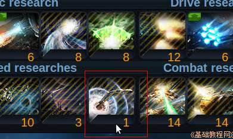
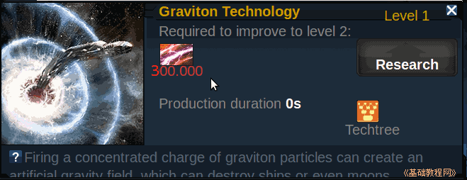
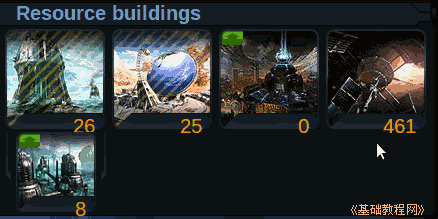
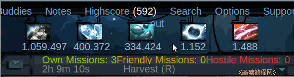
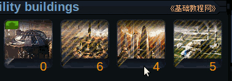
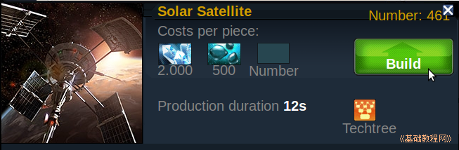
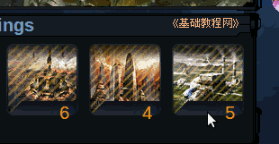
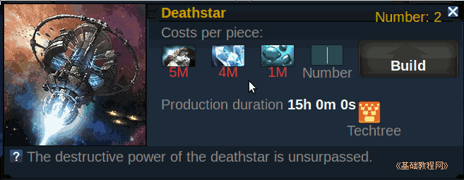

Ogame 银河帝国游戏新手入门
作者：TeliuTe 来源：基础教程网
死星是终极战舰飞船，建造它需要大量资源；
1）进入 http://ogame.org，点右上角红色的“Login”登录；
2）在出来的登录框中，依次选择自己的星球，输入用户名、密码后点“Login”登录；
3）死星所需的科技里的引力技术(Graviton Technology)达到一级；

4）引力技术需要能量为 300,000

5）除了升级太阳能发电站以外，主要是靠太阳能卫星来提供，可能需要几千颗卫星；

6）提前计算好所需的卫星数量，准备晶体和重氢资源，做好 FS 防止被打劫；

7）把纳米机器人工厂升到2级以上，这样可以快速建造卫星，防止别人的偷袭干扰；

8）准备好各个条件，选择别人都不怎么活动的时间段里，开始建造太阳能卫星，完成后立刻升级引力技术；

9）能量升上去以后，还可以升级地形改造器，增加星球的面积，它也需要大量能量；

10）建造死星需要5M金属、4M晶体和1M的重氢，通过不断积累可以获得；

本节学习了建造死星的基本操作，如果你成功地完成了练习，请继续学习下一课内容；
本教程由86团学校TeliuTe制作|著作权所有
基础教程网：http://teliute.org/
美丽的校园……
转载和引用本站内容，请保留版权信息和本站链接。